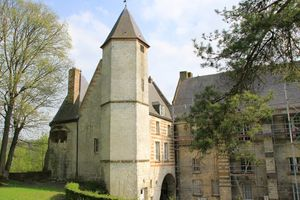
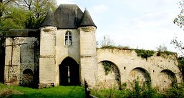
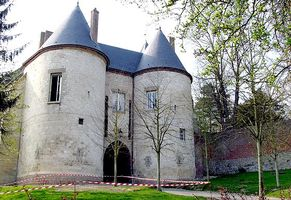

Recensement Jean-Claude Truffet
| Département | 80 — Somme |
| Canton | Doullens |
| Commune | Lucheux |
| Type d'édifice | Château |
| Période d'origine | XV |
| Coordonnées GPS | 50° 11' 52,89" Nord, 2° 24' 36,45" Est |



LUCHEUX , les archives n'attestent véritablement l'existence du château qu'en 1147 mais l'on situe sa fondation vers 1120. C'est Hugues II Campdavène, comte de Saint Pol qui en serait l'instigateur. Au XIIe siècle, par l'hommage qu'Hugues IV Campdavène rend au roi Philippe Auguste, Lucheux demeure dans le giron des comtes de saint-Pol mais relève directement du royaume. Lorsque Hugues IV Campdavène meurt à Constantinople, en 1205, sa fille fait passer le château à la famille de Châtillon, Guy Ier de Châtillon et ensuite Guy II remodèlent les fonctions militaires et enrichissent l'ensemble d'éléments résidentiels dans le deuxième quart du XIIIe siècle. Le donjon et la grande salle sont reconstruits. Le château devient alors, avec ses jardins, son verger et la forêt, un cadre agréable apprécié des comtes de Saint-Pol et de divers Rois de France qui y séjournent régulièrement à partir du XIVe siècle. Après la bataille d'Azincourt en 1415, le château est très endommagé. Pierre de Luxembourg le répare et en profite pour moderniser l'arsenal militaire en 1431. Louis de Luxembourg, son successeur, complète ce dispositif par la construction de la tour Neuve, il est exécuté en 1475 pour avoir voulu ériger Lucheux en une principauté autonome et puissante de par sa situation à la limite du royaume de France et des états bourguignons. Le comté de Saint-Pol est alors confié à Guy Pot, bailli de Vermandois avant que Charles VII ne le rende à Marie de Luxembourg. Au XVIe siècle le château doit encore subir les assauts répétés des Anglais et des Impériaux, qui en 1522 exercent un siège de huit jours à l'issue duquel seul le donjon résiste. Malgré les réparations importantes qui furent entreprises, le château ne peut se relever et en 1640, Richelieu donne l'ordre de le démanteler. Après sa saisie comme bien national, les parties les plus anciennes (donjon et résidence en basse cour) sont à l'état de ruines, les restes en élévation ont été restaurés et maintenus hors d'eau.
LUCHEUX l'ensemble des vestiges est compris dans une enceinte polygonale irrégulière, percée de deux portes et renforcée de plusieurs tours. Elle est cernée par un fossé sec, aujourd'hui comblée au sud. De ce fait, et contrairement au modèle philippéien, les bâtiments sont construits de manière anarchique et sa surface est immense. La porte du Bourg menait à la ville. Formée d'un berceau brisé entre deux tours circulaires coiffées de poivrières, elle était autrefois protégée par une herse et un pont-levis à flèche, fonctionnant donc sur un système de contrepoids, ainsi que l'attestent les rainures verticales dans la partie supérieure. La deuxième porte, celle du Haut-Bois qui donnait accès à la forêt, est flanquée de deux massifs contreforts rectangulaires aux allures de tours qui, jusqu'au XVIIIe siècle étaient couronnées d'échauguettes. Cette seconde entrée était, elle aussi, dotée d'un pont-levis. A droite de la porte, la courtine talutée à sa base, conserve des mâchicoulis en arc plein-cintre bandés sur des contreforts peu saillants. Retranché derrière les mâchicoulis, le chemin de ronde en espalier s'étendait sur trois plates-formes séparées par des escaliers. Aujourd'hui ce dispositif a disparu mais l'on peut l'imaginer grâce à l'existence de lits de silex noir bien distincts dans les murs en calcaire blanc. A l'intérieur de l'enceinte, l'élément fort du dispositif militaire est le donjon dont il ne subsiste plus que la partie orientale. Ce cylindre cantonné de quatre demi-tourelles s'assoit en encorbellement sur une base plus ancienne carrée renforcée de contreforts semi-circulaires, correspondant au donjon roman. De longues archères présentes dans l'axe de la tour centrale et sur chacune des tourelles attestent du rôle essentiellement défensif de ce donjon, et ce malgré les dimensions des salles, proches de celles des pièces résidentielles des châteaux, en particulier la pièce octogonale au centre du bâtiment. Le caractère résidentiel du château est attesté par la conservation de la grande salle rectangulaire ouverte vers l'ouest par sept fenêtres géminées aux linteaux décorés de trèfles trilobés.
Famille de Gfuy Pot"
Lucheux GPS : 50° 11' 52,89" Nord, 2° 24' 36,45" Est